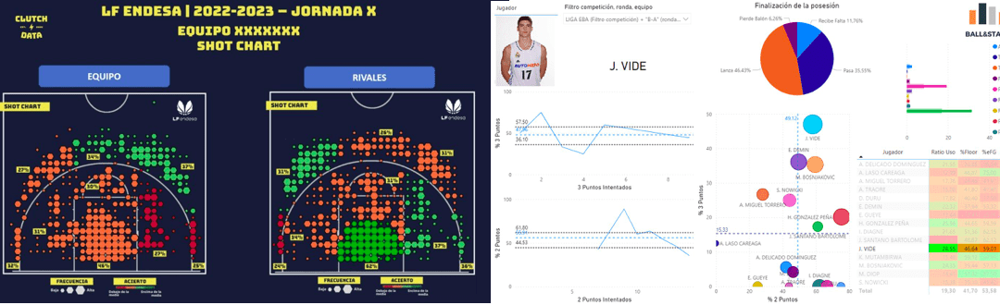

¿Te acuerdas de Raimundo? Él sigue con su trabajo en la cadena de supermercados. Quizás recuerdes que su trabajo consistía en trabajar con los datos de que disponía y lo que solía hacer era elaborar tablas o matrices con ellas para tener toda la información más a la vista y más fácil de comparar. Eso ocurre muchas veces en la vida cotidiana. El entrenador de un equipo de baloncesto va recogiendo todo el proceso que se sigue a lo largo de un partido mediante tablas comparativas, muchas de las cuales puedes verlas en las páginas deportivas de los diarios. El trabajar con esas matrices de números hace que sea más fácil seguir la evolución de los jugadores en lugar de tenerlo todo escrito según cada uno de los cuartos.

En este apartado lo que vamos a ver es como, para resolver un sistema, es posible trabajar con expresiones más simples que las que hemos visto hasta el momento. En concreto vamos a trabajar solamente con los coeficientes del sistema y no vamos a tener que arrastrar las incógnitas ni las igualdades. Quizás pienses que esto es algo nuevo pero no es así.
<br>
El trabajar sólo con coeficientes para no tener que ir arrastrando las variables no es algo que debe resultarte desconocido. Aunque no lo recuerdes, seguro que en años anteriores viste la Regla de Ruffini para hallar el cociente y resto de la división de un polinomio entre divisores de la forma x-a, siendo a un número cualquiera. En dicha regla se distribuyen, en una caja, ordenadamente los coeficientes del polinomio y mediante sumas y multiplicaciones es posible hacer la división.
El matemático italiano Paolo Ruffini (1765, 1822) se graduó, además de en Matemáticas, en Medicina y Filosofía. Durante muchos años ocupó las cátedras de Medicina y Matemáticas en la Universidad de Modena, de la que fue Rector. Como curiosidad comentar que enfermó durante una epidemia de tifus, y que algunos años más tarde presentó un estudio de dicha enfermedad basado en su propia experiencia.
Trabajó principalmente en el campo del álgebra, en concreto en la búsqueda de las soluciones de ecuaciones de grado inferior a cinco.
Método de Gauss para resolver sistemas
| El Método de Gauss para resolver sistemas de ecuaciones lineales consiste en tomar la matriz ampliada del sistema y, mediante las transformaciones típicas de Gauss, conseguir una matriz triangular superior. Una vez conseguida, basta volver a recomponer el sistema que queda obteniéndose un sistema escalonado, es decir, un sistema donde cada ecuación tiene una incógnita más que la anterior. |
Recordemos los procedimientos que podemos seguir en el método de Gauss.
-
Podemos cambiar dos filas entre sí.
-
Podemos multiplicar o dividir una fila completa por cualquier número.
-
Si hay dos filas iguales podemos eliminar una de ellas.
-
Si una fila es completa de ceros, podemos eliminarla.
-
A una fila le podemos sumar otra cualquiera multiplicada por un número.
El Método de Gauss es una generalización del Método de Reducción.
Ejemplo
Vamos a resolver el sistema \[\begin{cases}
x + 2y + 3z = 9 \\
2x + 3y + z = 4 \\
-x + 5y + 4z = 5
\end{cases}\]
Escribimos la matriz ampliada del sistema, separando la columna de los términos independientes.
A la segunda fila le restamos la primera multiplicada por dos.
A la tercera se le suma la primera.\[\left( \begin{array}{ccc|c}
1 & 2 & 3 & 9 \\
2 & 3 & 1 & 4 \\
-1 & 5 & 4 & 5
\end{array} \right)
\xrightarrow{F_2 - 2 \cdot F_1}
\left( \begin{array}{ccc|c}
1 & 2 & 3 & 9 \\
0 & -1 & -5 & -14 \\
-1 & 5 & 4 & 5
\end{array} \right)
\xrightarrow{F_3 + F_1}
\left( \begin{array}{ccc|c}
1 & 2 & 3 & 9 \\
0 & -1 & -5 & -14 \\
0 & 7 & 7 & 14
\end{array} \right)\]Por último, le sumamos a la tercera la segunda multiplicada por 7.
\[
\left( \begin{array}{ccc|c}
1 & 2 & 3 & 9 \\
0 & -1 & -5 & -14 \\
0 & 7 & 7 & 14
\end{array} \right)
\xrightarrow{F_3 + 7 \cdot F_2}
\left( \begin{array}{ccc|c}
1 & 2 & 3 & 9 \\
0 & -1 & -5 & -14 \\
0 & 0 & -28 & -84
\end{array} \right)
\]
Ahora reconstruimos el sistema:\[
\left.
\begin{aligned}
x + 2y + 3z &= 9 \\
-y - 5z &= -14 \\
-28z &= -84
\end{aligned}
\right\}
\]
Y comenzamos a resolverlo de abajo arriba.
\[ z = \frac{-84}{-28} = 3 \]
\[ y = 14 - 5z = 14 - 15 = -1 \]
\[ x = 9 - 2y - 3z = 9 + 2 - 9 = 2 \]
Luego la solución del sistema es la terna \((2, -1, 3)\)
Ejercicio guiado
Practica con este tutor la resolución de sistemas por el método de Gauss.
Tutor Interactivo: Sistemas por Gauss
- Escalona la matriz ampliada haciendo ceros por debajo de la diagonal principal.
- Utiliza operaciones del tipo k1·Fobjetivo + k2·Fpivote → Fobjetivo.
- Acepta fracciones (ej: -1/2).
Sistema Original
Matriz Ampliada (A | b)
Solucionador
Si lo que quieres es ver cómo se resuelve un sistema en concreto, usa esta herramienta.
Solucionador Paso a Paso: Método de Gauss
Introduce los coeficientes:
Puedes usar números enteros, decimales o fracciones (ej. 1/2, -3/4). Pon un 0 si falta la incógnita.
Ejercicio resuelto
Raimundo ha recibido los datos de las compras de pescado destinado a la sección correspondiente de sus supermercados. Su cadena suele trabajar con tres mercados distintos según el tipo de pescado que reciben. Sabe que la caja de pescado que sirve el primer mercado la pagan a 30 €, la del segundo a 20 € y a 40 € cada caja de pescado servida por el tercer mercado. En el mes pasado han tenido que pagar 40500 euros por las 1500 cajas de pescado que han recibido en total de los tres mercados el último mes. Además, le han comentado que del segundo mercado han recibido tantas cajas de pescado como del primero y tercero juntos. ¿Cuántas cajas se habrán comprado a cada uno de los mercados?
Si llamamos \(x\) al número de cajas recibidas del primer mercado, \(y\) a las del segundo y \(z\) a las del tercero, tendremos el siguiente sistema de ecuaciones, que puede simplificarse en su forma general que aparece en el segundo sistema.
\[\begin{cases}
x + y + z = 1500 \\
30x + 20y + 40z = 40500 \\
y = x + z
\end{cases}
\rightarrow
\begin{cases}
x + y + z = 1500 \\
3x + 2y + 4z = 4050 \\
-x + y - z = 0
\end{cases}\]
Las soluciones de ese sistema son:
\(x= 450\) cajas de pescado del primer mercado.
\(y= 750\) cajas del segundo mercado.
\(z= 300\) cajas servidas por el mercado tercero.